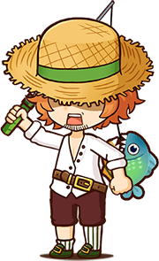
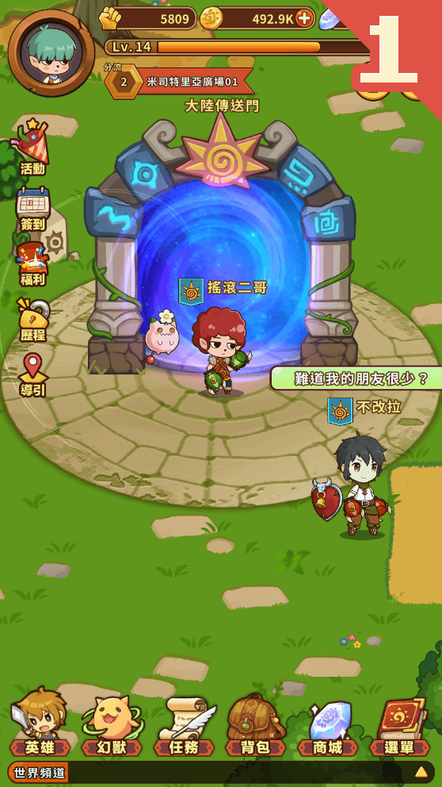
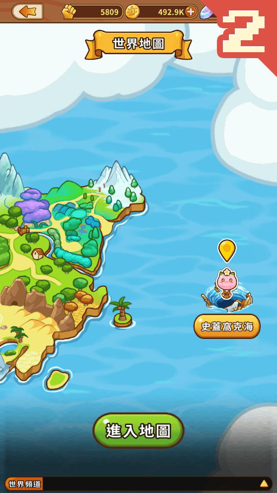
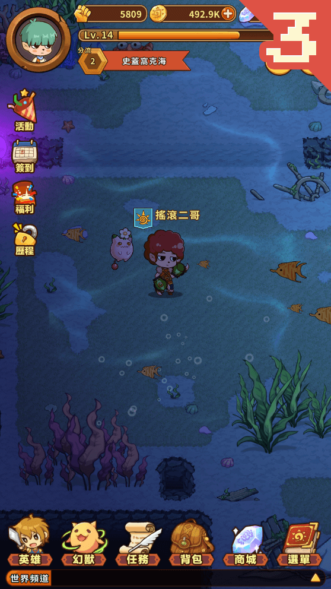
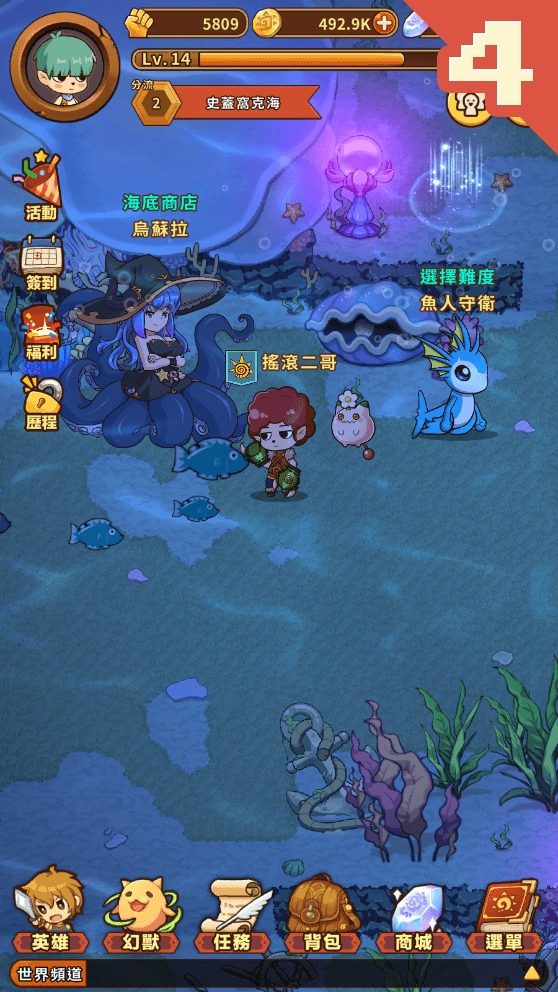
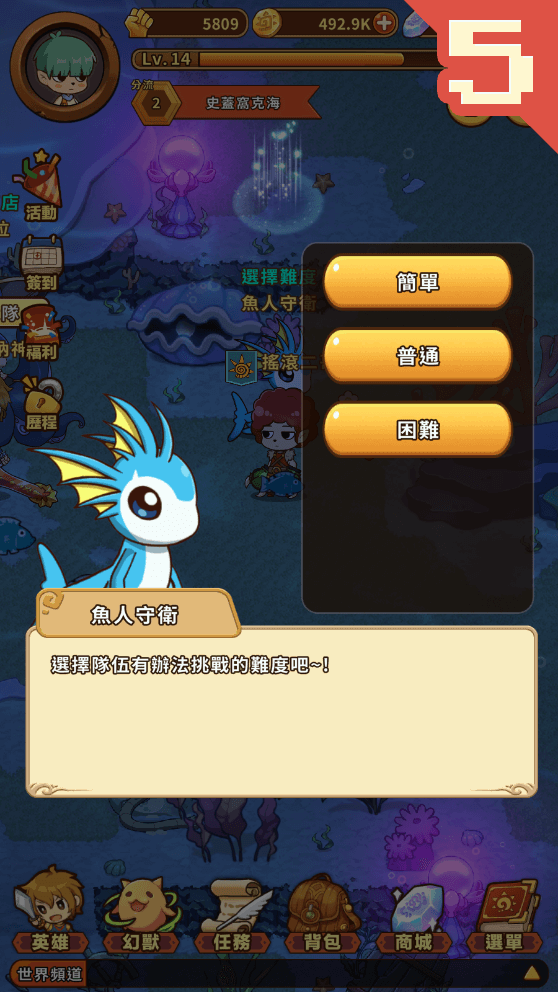
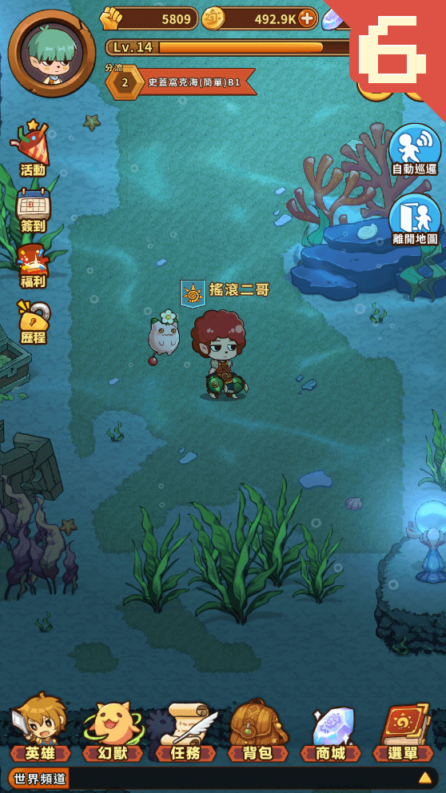
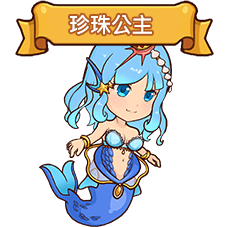
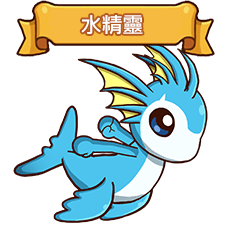
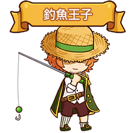

月光下跳舞的魔女，
埋藏在傳說的神燈，
在沙漠深處的魔物，
神秘的天方夜譚歌謠流傳在大陸上，
遠道而來的冒險者，
神秘的巴格達將從沙風暴中現世。
潛能覺醒 - 幻獸隊伍系統
來自神祕的沙漠之力，帶給冒險者全新的力量。
透過各種幻獸進行組合的隊伍，可以產生不同的輔助效果!!
幻獸介紹
幼小的身影，徬徨遊蕩在奇妙的森林，
掉進不知深淺的兔子洞，
迷失在華麗花園中，
最終在莊嚴的城堡裡，
那手持權杖的紅色身影，正等待著您的到來。
夢遊仙境
幻獸介紹
深海傳出的優美歌聲，海中浮現的觸手身影。
王子、公主、魔女，愛恨糾葛的命運。
失落的大海秘寶，賦予力量覺醒。
隨身攜帶三叉戟的鯊魚女孩，四處尋找獵物。
史蓋窩克海那不為人知的祕密即將展現在各位觀眾面前。
-
故事背景
相傳在史蓋窩克海岸附近有一名得到傳說中天才釣手「九瓶」真傳的少年，從小接受祖父的訓練，故年紀輕輕擁有一般人無法達到的高超釣魚技藝，深知各種魚類的生態。在海中大快朵頤享受垂釣成果。人們因那無人可敵的高超釣技，尊稱「釣魚王子」。 但這名少年卻在每逢月圓之夜，總是一人駕駛小船出海偷偷潛入海中，消失不見蹤影。然而當人們快遺忘他之時，卻帶著驚人財寶、稀有的海洋生物出現在眾人面前。深海傳出的優美歌聲，海中浮現的觸手身影，失落的大海秘寶，賦予力量覺醒。隨身攜帶三叉戟的鯊魚女孩，四處尋找獵物。史蓋窩克海那不為人知的祕密即將展現在各位觀眾面前。
- 
史蓋窩克海
全新冒險地區，終年被迷霧隱藏的神秘海域終於重現人間。
探險六步驟
-
 在廣場前往大陸傳送門 -
 打開世界地圖，將可看到全新地區「史蓋窩克海」 -
 進入「史蓋窩克海」 -
 尋找魚人守衛 -
 可選擇海域困難度 -
 進入海域後，將可開始探險
-
小道消息一
在海中需要食用氧氣泡泡糖，才能獲得收穫。 -
小道消息二
烏蘇拉開了一間商店，裡面有各種奇珍異寶。 -
小道消息三
海域地形複雜，小心迷路。 -
小道消息四
海域幻獸很強，沒有一定實力要小心。 -
小道消息五
海域最深處，有神秘的強敵存在。 -
小道消息六
傳聞海域中有「工作」築地正在建造中，或許未來人人有工作的機會存在。
祕寶系統
世界是一體兩面，一面是由各種故事所聚集而成的童話世界，另外一面是創世神所在的真實世界。每一篇故事的誕生，將會在真實世界中進行流傳。當人望達到一定程度，這篇故事，將會凝聚出一股神秘力量反饋到童話世界中。
今日，傳說失落文明「亞特蘭迪斯」的偉大祕寶「神鰭海螺」。將在史蓋窩克海地區再次展現威能!!相傳只要付出智商，就可以獲得任何解答。具備不可思議的魔法之力。
祕寶「神鰭海螺」
冒險者，可前往「史蓋窩克海」地區，擊敗出沒在此區域的幻獸將可獲得指定材料道具，收集一定數量即可解放祕寶之力，同時這些材料道具也可以提升祕寶能力。
-
小道消息一
傳說中水之女神就是因為使用了太多「神鰭海螺」，導致... -
小道消息二
祕寶非只有一種，在這個世界上還存在著許許多多的祕寶等待冒險者挖掘 -
小道消息三
祕寶可提升幻獸的能力，其效果每種祕寶均為不同。透過各種搭配可變換多種玩法與策略
幻獸介紹

種族
人魚
固有奧義
攻擊敵方1排，並隨機魅惑1名敵人，被魅惑對象會幫助攻擊敵人，如達成指定條件(依據屬性有不同條件)，則魅惑回合數提升。
海洋之音(水屬性)；指定條件：目標身上持有降攻效果。
簡介
傳說中的生物，相傳擁有天籟般的歌喉，任何人聽了都會沉淪迷失在那美妙的聲音中無法自拔，故時常發生水手傾聽失神，使航船觸礁沉沒。在人魚世界中有一名年輕的人魚，對人類世界充滿了好奇心，時常在月圓之夜偷偷游到海面去，趴在礁岩上望著米司特里亞大陸。

種族
寄居蟹
固有奧義
攻擊敵方1人，並同時提升自身某項能力(依據屬性有不同效果)、玩家獲得一次傷害減免。
蟹甲衝擊(水屬性)效果：提升自身暴擊抵抗
簡介
強力的雙鉗、無論是沙灘、珊瑚礁、海岸線至深海海底的不同深度海水中隨處可見。

種族
魚人
固有奧義
攻擊敵方1人，並同時回復玩家一定生命值，如達成指定條件(依據屬性有不同條件)，則恢復力提升。
蔚藍加護(水屬性)
指定條件：目標身上持有降攻效果。
指定條件：目標身上持有降攻效果。
簡介
夢幻的種族。外貌具有一半人和一半魚的特徵，可生活在陸地與海中。多數魚人族喜好和平，因受到海洋的祝福，故可以使用治癒系的能力，深受海洋世界生物的喜愛，天生擁有強健的體魄，故有些魚人族具有極高的戰鬥能力。

種族
獸鬥士
固有奧義
路亞九釣；效果：攻擊敵方1排，獲得一層路亞九釣效果，累積2層，可立即減少幻獸本身所有正在CD時間中的學習技能(最多減少 X回合)。
簡介
相傳在史蓋窩克海岸附近有一名得到傳說中天才釣手「九瓶」真傳的少年，從小接受祖父的訓練，故年紀輕輕擁有一般人無法達到的高超釣魚技藝，深知各種魚類的生態。在海中大快朵頤享受垂釣成果。人們因那無人可敵的高超釣技，尊稱「釣魚王子」